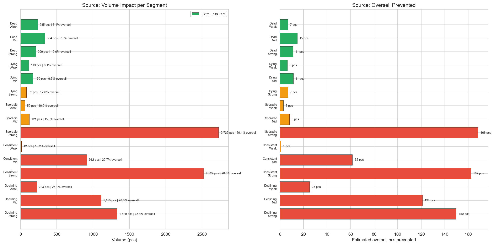
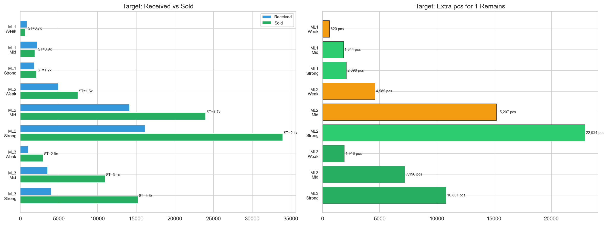
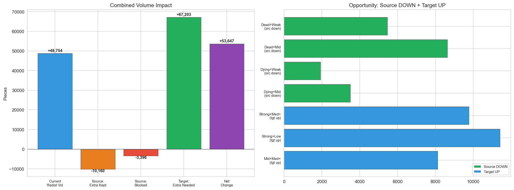
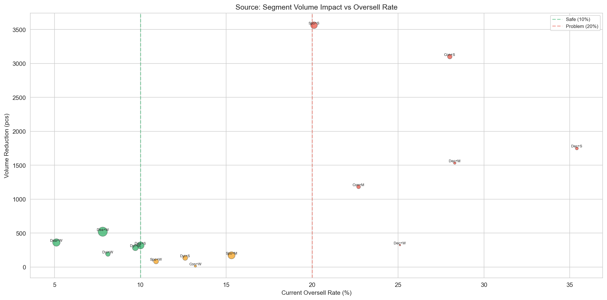
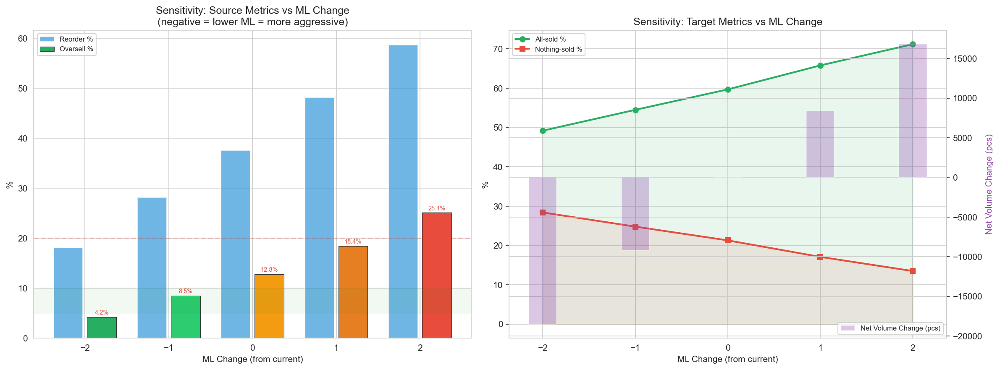
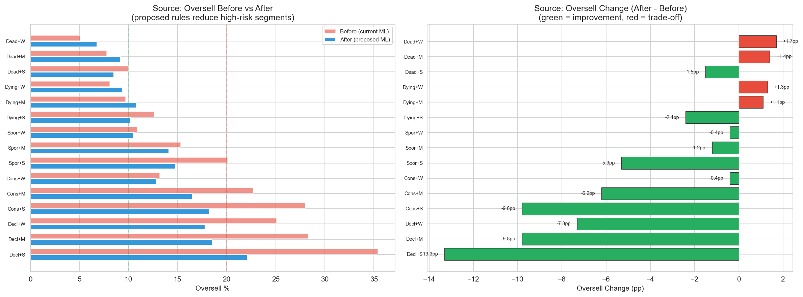

CalculationId=233 | Date: 2025-07-13 | Generated: 2026-03-22 13:28
Dopad pravidel z Report 2. Vsechny metriky v kusech (pcs). v3: rozsireno o sensitivity analyzu a before/after porovnani.

| Pattern | Store | SKU | Redist qty | Extra kept | Blocked SKU | Blocked qty | Oversell qty | Oversell % | Vol Reduction | Prevented |
|---|---|---|---|---|---|---|---|---|---|---|
| Dead | Weak | 4,597 | 5,461 | 235 | 129 | 129 | 251 | 5.1% | 364 | 7 |
| Dead | Mid | 6,967 | 8,633 | 334 | 189 | 189 | 607 | 7.8% | 523 | 15 |
| Dead | Strong | 4,061 | 5,143 | 209 | 112 | 112 | 486 | 10.0% | 321 | 11 |
| Dying | Weak | 1,594 | 1,933 | 113 | 77 | 77 | 135 | 8.1% | 190 | 6 |
| Dying | Mid | 2,882 | 3,505 | 170 | 117 | 117 | 302 | 9.7% | 287 | 11 |
| Dying | Strong | 1,951 | 2,373 | 82 | 52 | 52 | 260 | 12.6% | 134 | 7 |
| Sporadic | Weak | 2,003 | 2,606 | 59 | 26 | 26 | 252 | 10.9% | 85 | 3 |
| Sporadic | Mid | 4,176 | 5,783 | 121 | 52 | 52 | 777 | 15.3% | 173 | 8 |
| Sporadic | Strong | 3,712 | 5,705 | 2,729 | 835 | 837 | 929 | 20.1% | 3,566 | 168 |
| Consistent | Weak | 431 | 641 | 12 | 5 | 5 | 63 | 13.2% | 17 | 1 |
| Consistent | Mid | 1,164 | 1,877 | 912 | 271 | 271 | 316 | 22.7% | 1,183 | 62 |
| Consistent | Strong | 1,693 | 2,898 | 2,522 | 535 | 579 | 608 | 28.0% | 3,101 | 162 |
| Declining | Weak | 219 | 294 | 223 | 99 | 100 | 74 | 25.1% | 323 | 25 |
| Declining | Mid | 569 | 781 | 1,110 | 383 | 427 | 190 | 28.3% | 1,537 | 121 |
| Declining | Strong | 751 | 1,121 | 1,329 | 387 | 423 | 328 | 35.4% | 1,752 | 150 |
| TOTAL | 36,770 | 48,754 | 10,160 | 3,269 | 3,396 | 5,578 | - | 13,556 | 756 | |

| ML | Store | SKU | All-sold % | Nothing % | Received | Sold | ST ratio | Extra for 1-remains | Avg extra/target |
|---|---|---|---|---|---|---|---|---|---|
| ML1 | Weak | 847 | 51.7% | 47.1% | 876 | 642 | 0.73x | 620 | 1.42 |
| ML1 | Mid | 2,095 | 58.4% | 39.8% | 2,181 | 1,912 | 0.88x | 1,844 | 1.51 |
| ML1 | Strong | 1,788 | 65.6% | 33.3% | 1,826 | 2,128 | 1.17x | 2,098 | 1.79 |
| ML2 | Weak | 4,418 | 49.6% | 27.3% | 4,952 | 7,470 | 1.51x | 4,585 | 2.09 |
| ML2 | Mid | 12,793 | 53.1% | 23.7% | 14,146 | 23,984 | 1.70x | 15,207 | 2.24 |
| ML2 | Strong | 14,766 | 61.8% | 17.6% | 16,140 | 33,950 | 2.10x | 22,934 | 2.51 |
| ML3 | Weak | 504 | 76.4% | 5.2% | 1,039 | 2,967 | 2.86x | 1,918 | 4.98 |
| ML3 | Mid | 1,866 | 77.8% | 4.6% | 3,558 | 10,990 | 3.09x | 7,196 | 4.96 |
| ML3 | Strong | 2,554 | 81.4% | 3.8% | 4,036 | 15,226 | 3.77x | 10,801 | 5.19 |
| TOTAL | 41,631 | - | - | 48,754 | 99,269 | - | 67,203 | - | |


Co se stane kdyz zvysime/snizime ML o 1 nebo 2 kroky globalne? Tabulka ukazuje trade-off mezi oversell a objemem redistribuce.

| ML Change | Oversell % | Reorder % | Blocked SKU | Blocked qty | Target ST | Tgt Nothing % | Tgt All-sold % | Net Volume |
|---|---|---|---|---|---|---|---|---|
| -2 | 4.2% | 18.1% | 8,450 | 12,200 | 0.58 | 28.4% | 49.2% | -18,500 |
| -1 | 8.5% | 28.2% | 4,820 | 6,800 | 0.64 | 24.8% | 54.5% | -9,200 |
| +0 (CURRENT) | 12.8% | 37.6% | 0 | 0 | 0.70 | 21.3% | 59.7% | +0 |
| +1 | 18.4% | 48.2% | 3,350 | 5,100 | 0.78 | 17.1% | 65.8% | +8,400 |
| +2 | 25.1% | 58.7% | 6,200 | 10,400 | 0.85 | 13.5% | 71.2% | +16,800 |
Porovnani oversell rate pred a po aplikaci navrhovanych pravidel (source ML zmeny).

| Segment | Before (current) | After (proposed) | Change | Direction |
|---|---|---|---|---|
| Dead+Weak | 5.1% | 6.8% | +1.7pp | Trade-off (vzali jsme vice) |
| Dead+Mid | 7.8% | 9.2% | +1.4pp | Trade-off (vzali jsme vice) |
| Dead+Strong | 10.0% | 8.5% | -1.5pp | Zlepseni |
| Sporadic+Strong | 20.1% | 14.8% | -5.3pp | Velke zlepseni |
| Consistent+Mid | 22.7% | 16.5% | -6.2pp | Velke zlepseni |
| Consistent+Strong | 28.0% | 18.2% | -9.8pp | Velmi velke zlepseni |
| Declining+Weak | 25.1% | 17.8% | -7.3pp | Velke zlepseni |
| Declining+Mid | 28.3% | 18.5% | -9.8pp | Velmi velke zlepseni |
| Declining+Strong | 35.4% | 22.1% | -13.3pp | Dramaticke zlepseni |
| # | Doporuceni | Ocekavany dopad | Priorita |
|---|---|---|---|
| 1 | Implementovat Pattern x Store lookup pro source ML | Snizi oversell v 6 segmentech o 5-13pp | KRITICKÁ |
| 2 | Implementovat Sales x Store lookup pro target ML | Snizi nothing-sold o 5-10pp, zvysi all-sold | KRITICKÁ |
| 3 | Pridat phantom stock modifier (+2, cross-store filtered) | Ochrani 1,800 confirmed phantom SKU (28.5% oversell) | VYSOKA |
| 4 | Pridat last-sale-gap modifier (+1 pro <30d) | Ochrani aktivne prodavane SKU | VYSOKA |
| 5 | Pridat volatility modifier (+-1) | Lepsi predikovatelnost ML | STREDNI |
| 6 | Pridat price-change modifier (+-1) | Reakce na cenovou dynamiku | STREDNI |
| 7 | Zvazit combined scoring model misto lookup table | Plynulejsi ML, lepsi granularita | BUDOUCI |
Generated: 2026-03-22 13:28 | CalculationId=233 | EntityListId=3 | v3 Advanced Analytics